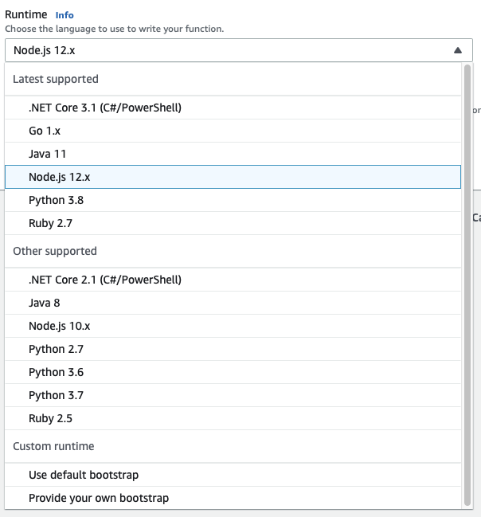

Swift AWS Lambda runtime
Introduction
The swift aws lambda runtime project came up in my github activity as someone I follow starred the project.
The possibility to create lambdas in swift is intrigueing as we are using AWS Lambda to support the iOS app my team and I are building for my day job.
AWS doesn't support this runtime directly but they do support custom runtimes and this is a community driven project with support of the swift core team
I am not sure how easily interaction would be with other parts of the AWS ecosystem but I recently came across this project aws-sdk-swift which perhaps might be of some help with future parts of this project.
As someone who was completely niave and with no previous AWS experience I thought it might be useful to document my experience of getting this up and running.
The following will likely not be an example of minimum approach and as I have no training on any part of AWS it will potentially also not be an example of best practices
Create an AWS account
This was all fairly straight forward and doesn't warrant documenting.
To get started go to AWS website.
From there sign up and get access to 12 months free tier. The thing I found slightly worrying was that as someone who wanted to just experiment with AWS not run a mission cirtical website there appears to be no way put a cap on expenditure. This seems to be an intentional oversight on the part of AWS with the justification being that a normal business would not want a hard cut off, but as an individual just learning AWS the thought of racking up a huge bill seems worrisome.
Create a simple lambda
For the purposes of testing I thought it would be helpful to have a simple lambda for testing.
From Services menu in AWS find "Lambda" and click create function. I chose Node.js as the Runtime for now but you can see options for "Custom Runtime" which I assume is what I will use later when I switch to swift.
A hello world style function should be created that will return a 200 response with a simple message anytime it is triggered.
Configure API Gateway
Create a REST API
From Services choose "API Gateway" and then click "Create API".
You can create different APIs I chose "REST API".
Once the API is created, I navigated to "Resources" where from the "Actions" dropdown I chose "Create Resource".
With the newly created Resource selected choose "Create Method". The integration type will obviously be "Lambda Function".
In the Lambda Function text field type the name of the Lambda, it should auto complete and click "Save".
Create an API key
I thought it wise to create an API key to somewhat restrict calls to the API.
This can be done under "API Keys", from "Actions" dropdown choose "Create API key", choose a name and allow AWS to auto generate a key.
Create a Usage Plan
To set limits on a specific API Key a usage plan must be created. From "Usage Plans" click "Create".
I chose a very low "Rate", "Burst" and "Quota" as I am more concerned with restricting accidental misuse or abuse rather than fullfilment.
Create Stage for deployment
Before you can create a stage you need deploy the lambda. From "Resource" select "Deploy API" from "Actions" dropdown.
From Stages chose "Create" and specify a name for the stage and choose the deployment from the dropdown.
Assocate API Key
From "Usage Plans" select the plan created previously and then click "Add API Stage".
Choose the API and stage.
Additionally the Resource Method must specify "API Key Request" as true. I am not sure if this is the best way but I did this from Resources, by selecting the Method.
Setting up a custom domain
I decided to use a subdomain for a domain I already own. With very limited knowledge of name server configuration this proved slightly challenging but here is the steps I followed.
Create an SSL certificate
All traffic must be encrypted using HTTPS a certificate needs to be created or provided. I chose to create a new one for my specific sub domain using AWS Certificate Manager.
To get the certificate issued you have to validate that you are the owner of the domain as I do not have admin or webmaster email addresses set up for the domain in question I had to use DNS record approach for this.
To do this I had to specify a new CNAME record, it is important to note that the CNAME record was not just for the particular subdomain but there was an additional "random" string of characters to be specified as well. This can be found under the name column.
Create a custom domain
Back under API Gateway service select "Custom domain names" and click "Create".
I specified my subdomain and as I intend to only use this from a single region I chose "Regional" end point type.
Choose the certificate created previously in AWS Certificate Manager and click "Create".
Next click "Configure API Mappings" and add a new mapping for the API and Stage.
Delegate subdomain authority
As my domain is hosted outside of AWS I had to delegate authority for the subdomain to AWS Route53 service.
- Create new hosted zone in Route53.
- Create new NS records in the register of my domain outside of AWS. Each NS record is for the subdomain and should have the value of the name servers specified in Route53 for the domain.
- The SOA record in Route53 indicates that responsibility for this sub domain will be managed from there.
- In Route53 add a new record set for the subdomain of type
A - Choose "Alias"
Yesradio option - Specify the alias target to be the API gateway
Using Swift Lambda runtime
Prerequisites
- Install Docker
- Install jq
- Install aws cli
- Create IAM Admin user
- Configure aws cli
Deploying hello world swift lambda
- Create a new s3 bucket
swift-lambda-testwhich is used during the deployment process - Create a new lambda named
HelloSwiftwith a custom runtime - Expose the the lambda through the API Gateway Service
- Enforce API Key restrictions
- Next clone
git@github.com:swift-server/swift-aws-lambda-runtime.git - Modify
deploy.shin the examplesscripts- change
lambda_namevalue toHelloSwift.
- change
- run
./scripts/deploy.sh - Deploy the newly updated API to your Stage in API Gateway
Done. 🚀